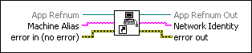

Resolve Machine Alias VI
Owning Palette: TCP VI and Functions
Requires: Base Development System
Returns the network address of the machine, which you can use with the networking and VI server functions.

 Add to the block diagram Add to the block diagram |
 Find on the palette Find on the palette |